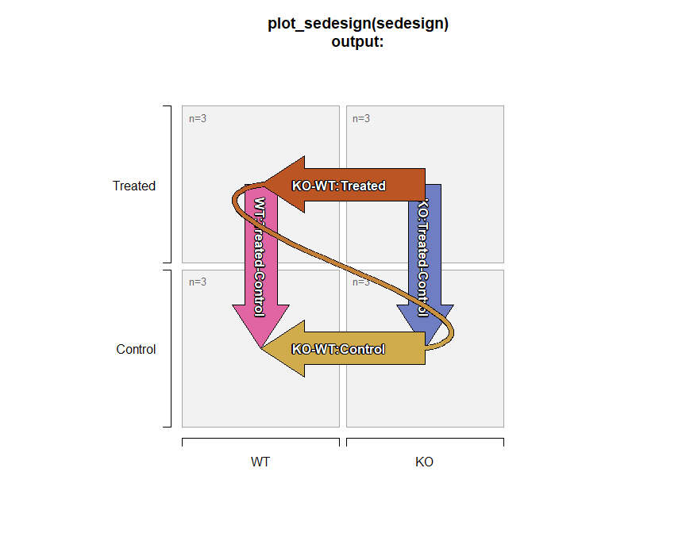

This package is under active development. These functions are in frequent use in active Omics analysis projects. A summary of goals and relevant features are described below.
Goals of jamses
The core goal is to make data analysis and visualization of SummarizedExperiment objects straightforward for common scenarios. It also accepts SingleCellExperiment and Seurat objects.
Apply Normalization / Adjustment
-
SEDesign: Create Design and Contrast matrices- Use
~ 0 + groupsyntax, see below. - Integrate Samples, Groups, and Contrasts.
- Visualize with
plot_sedesign().
- Use
-
SEStats: Analyze Multiple Contrasts- Use limma / limma-voom / limma-DEqMS.
-
Convenient contrast labels
-
Integrate with other tools.
-
SummarizedExperiment,SingleCellExperiment,Seurat,ExpressionSet,DESeqDataset,DGElist -
venndir::venndir()- see Github"jmw86069/venndir"to create directional Venn diagrams.
-
Make Effective Heatmaps
Jamses heatmap_se() reinforces heatmap principles, and applies some opinions.
- Data are centered.
- Always use divergent colors for centered data.
- Data are not scaled.
- Row and Column annotations are “easy”.
Approach for Statistical Contrasts
The Limma User’s Guide (LUG) is an amazing resource which describes numerous approaches for one-way and two-way contrasts which are mathematically equivalent. For a more thorough discussion please review these approaches to confirm that ~0 + x is mathematically identical to ~ x, and only differs in how estimates are reported.
Jamses uses the
~0 + xstrategy.Each experiment group is defined using independent replicates.
This approach does not imply that there is “no intercept” during the model fit, see LUG for details.
-
One-way contrasts compare only one factor per contrast.
- Valid one-way contrast:
- Invalid one-way contrast:
-
Two-way contrasts in Jamses compare the fold change of two compatible one-way fold changes.
- Two compatible one-way contrasts:
(A_treated - A_control) # one-way contrast # "treated-control" for A (B_treated - B_control) # compatible one-way contrast # "treated-control" for B- Corresponding two-way contrast:
SEDesign: Design and Contrasts
-
groups_to_sedesign()takes by default adata.framewhere each column represents an experiment factor, and creates the following: - Output is
SEDesignas an S4 object with slot names:-
design(sedesign)- the design matrix. -
contrasts(sedesign)- the contrasts matrix. -
samples(sedesign)- vector of samples.
-
Example SEDesign object
The example below uses a character vector of group names per sample, with two factors separated by underscore "_". The same data can be provided as a data.frame with two columns.
library(jamses)
library(kableExtra)
igroups <- jamba::nameVector(paste(rep(c("WT", "KO"), each=6),
rep(c("Control", "Treated"), each=3),
sep="_"),
suffix="_rep");
igroups <- factor(igroups, levels=unique(igroups));
# jamba::kable_coloring(color_cells=FALSE,
# format="markdown",
# caption="Sample to group association",
# data.frame(groups=igroups))
knitr::kable(data.frame(groups=igroups))| groups | |
|---|---|
| WT_Control_rep1 | WT_Control |
| WT_Control_rep2 | WT_Control |
| WT_Control_rep3 | WT_Control |
| WT_Treated_rep1 | WT_Treated |
| WT_Treated_rep2 | WT_Treated |
| WT_Treated_rep3 | WT_Treated |
| KO_Control_rep1 | KO_Control |
| KO_Control_rep2 | KO_Control |
| KO_Control_rep3 | KO_Control |
| KO_Treated_rep1 | KO_Treated |
| KO_Treated_rep2 | KO_Treated |
| KO_Treated_rep3 | KO_Treated |
The resulting design and contrasts matrices are shown below:
sedesign <- groups_to_sedesign(igroups);
jamba::kable_coloring(
# knitr::kable(
colorSub=c(`-1`="dodgerblue", `1`="firebrick"),
caption="Design matrix output from design(sedesign).",
data.frame(check.names=FALSE, design(sedesign)));| WT_Control | WT_Treated | KO_Control | KO_Treated | |
|---|---|---|---|---|
| WT_Control_rep1 | 1 | 0 | 0 | 0 |
| WT_Control_rep2 | 1 | 0 | 0 | 0 |
| WT_Control_rep3 | 1 | 0 | 0 | 0 |
| WT_Treated_rep1 | 0 | 1 | 0 | 0 |
| WT_Treated_rep2 | 0 | 1 | 0 | 0 |
| WT_Treated_rep3 | 0 | 1 | 0 | 0 |
| KO_Control_rep1 | 0 | 0 | 1 | 0 |
| KO_Control_rep2 | 0 | 0 | 1 | 0 |
| KO_Control_rep3 | 0 | 0 | 1 | 0 |
| KO_Treated_rep1 | 0 | 0 | 0 | 1 |
| KO_Treated_rep2 | 0 | 0 | 0 | 1 |
| KO_Treated_rep3 | 0 | 0 | 0 | 1 |
# knitr::kable(
jamba::kable_coloring(
colorSub=c(`-1`="dodgerblue", `1`="firebrick"),
caption="Contrast matrix output from contrasts(sedesign).",
data.frame(check.names=FALSE, contrasts(sedesign)));| KO_Control-WT_Control | KO_Treated-WT_Treated | WT_Treated-WT_Control | KO_Treated-KO_Control | (KO_Treated-WT_Treated)-(KO_Control-WT_Control) | |
|---|---|---|---|---|---|
| WT_Control | -1 | 0 | -1 | 0 | 1 |
| WT_Treated | 0 | -1 | 1 | 0 | -1 |
| KO_Control | 1 | 0 | 0 | -1 | -1 |
| KO_Treated | 0 | 1 | 0 | 1 | 1 |
For convenience, SEDesign can be visualized using plot_sedesign():
# plot the design and contrasts
plot_sedesign(sedesign);
title(main="plot_sedesign(sedesign)\noutput:")
- Two-way contrasts are indicated by the “squiggly curved line” which connects the end of one contrast to the beginning of the next contrast. This connection describes the first contrast, subtracted by the second contrast.